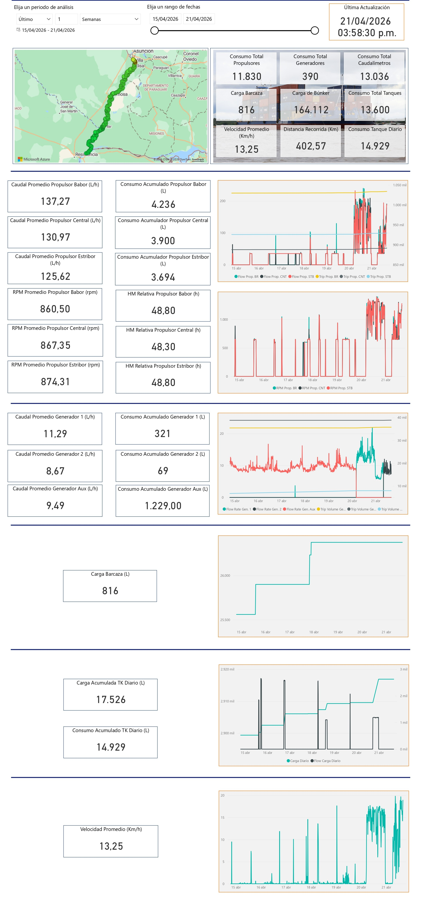
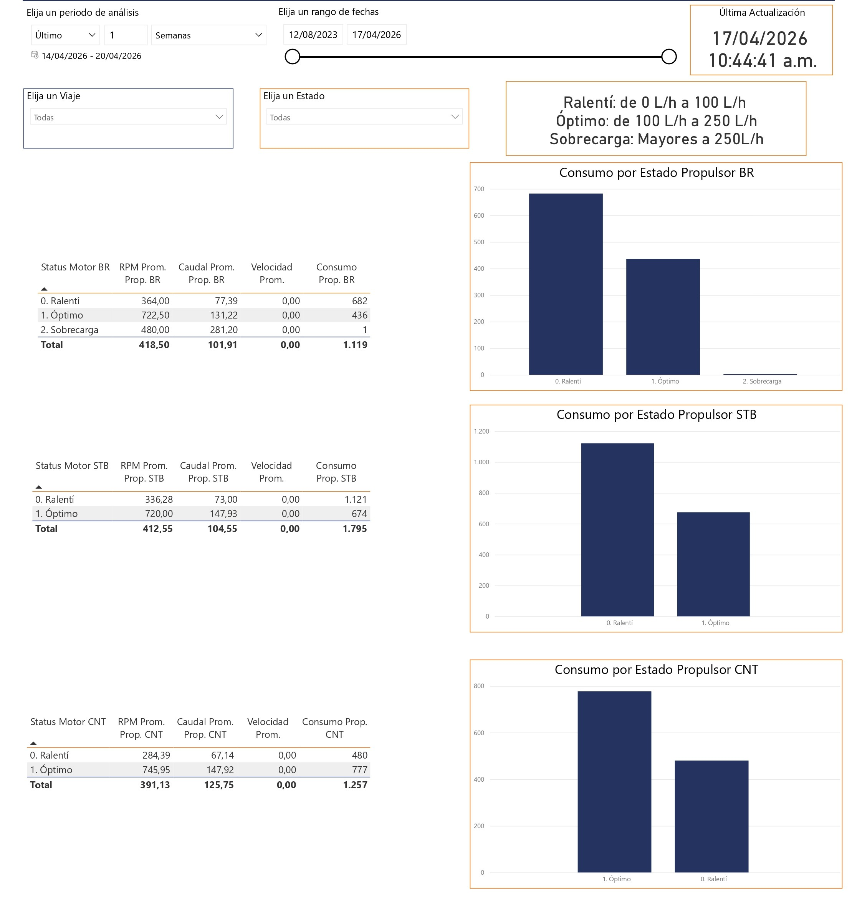
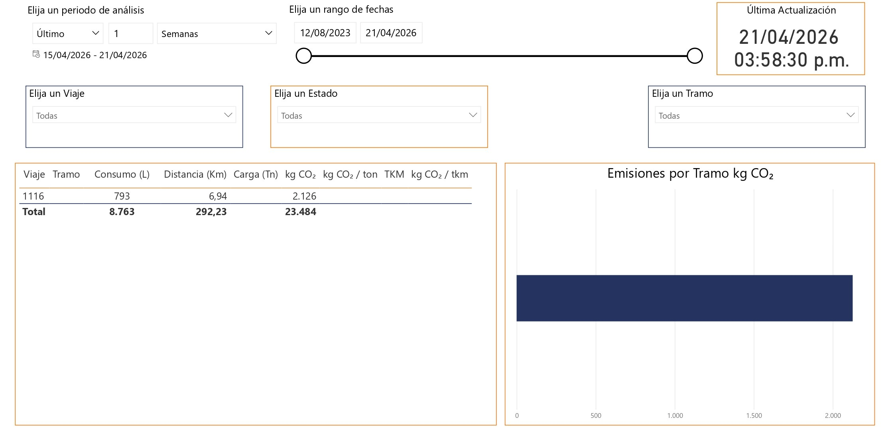
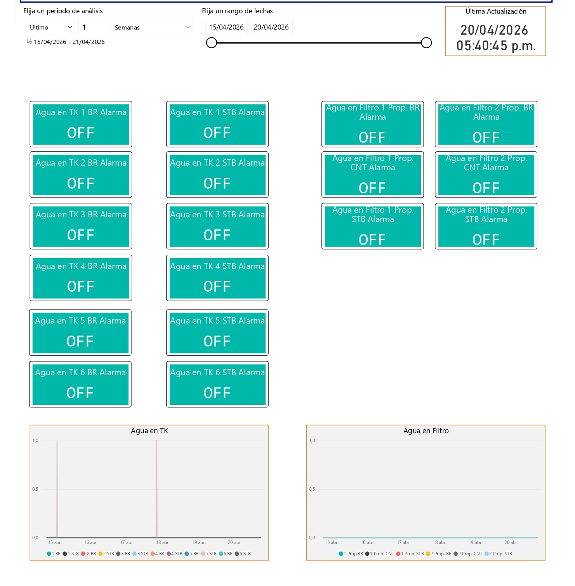
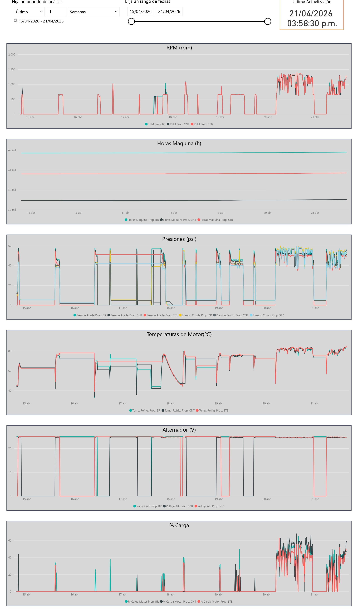
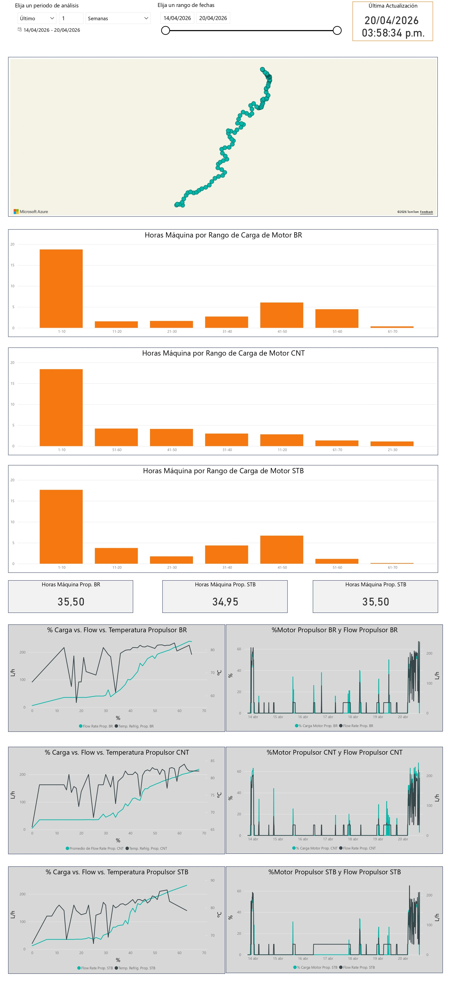
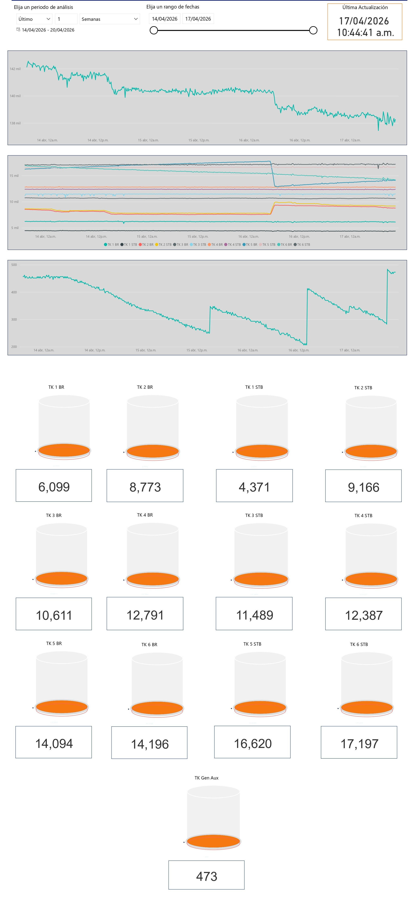
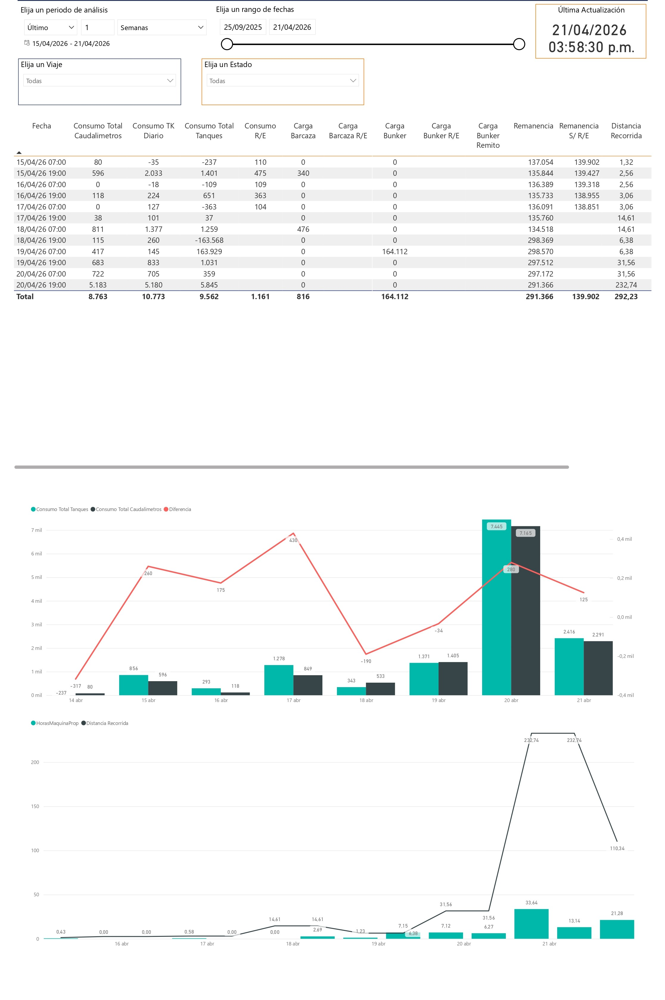
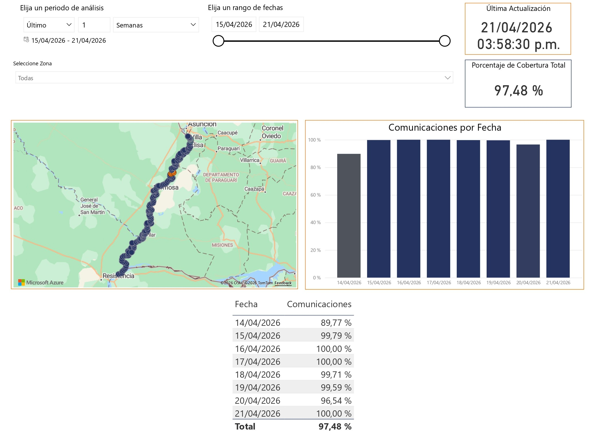

Parte 1 — Uso general
Esta primera parte cubre navegación, filtros e interacciones para establecer una base de lectura correcta antes de analizar pestañas específicas.
1. Introducción general
Este manual está orientado a clientes y usuarios que necesitan interpretar dashboards Power BI de forma clara, consistente y útil para su operación. El foco principal está en comprender cada pestaña del dashboard y su lectura recomendada.
Enfoque de esta guía
Primero se cubre uso general del dashboard; luego se desarrolla una lectura por pestañas; al final se cierra con prácticas recomendadas.
3. Uso de filtros y rango de fechas
Los filtros definen el alcance de toda la información visible. Antes de interpretar indicadores, confirma siempre el período principal y luego el rango específico dentro de ese período.
Qué debes saber primero
- El filtro principal es Elija un periodo de análisis.
- El filtro Elija un rango de fechas depende completamente del período principal.
- El segundo filtro solo recorta el período principal; nunca lo amplía.
Nota de referencia visual
La disponibilidad operativa actual del dashboard comienza en enero de 2026. Algunas capturas de esta guía se usan como referencia de interfaz y pueden mostrar rangos de ejemplo. Para consultas de información anterior o validación de disponibilidad histórica, comunícate con el soporte de PARKS Ingeniería.
Filtro 1 — Elija un periodo de análisis
Este control establece la ventana base de análisis y define los límites máximos de fechas que podrás usar en el resto de la consulta.
Filtro 2 — Elija un rango de fechas
Este control ajusta un subrango dentro de la ventana base definida por el Filtro 1 para focalizar la lectura.
Regla clave de dependencia entre ambos filtros
El Filtro 2 no es independiente: solo opera dentro del período definido por el Filtro 1. No puede desbloquear ni seleccionar fechas por fuera de ese límite.
Ejemplo práctico
Si seleccionas Último + 2 + Semanas, el Filtro 2 solo permitirá elegir fechas dentro de esas dos semanas.
Filtros y rango de fechas
Demostración interactiva para configurar el período base y definir el subrango de fechas antes de analizar cualquier indicador.
Qué mirar aquí: primero confirma el período de análisis; luego valida el rango de fechas aplicado; después revisa filtros activos y última actualización; y finalmente interpreta indicadores con ese contexto. Orden sugerido de lectura: período, rango, filtros y vigencia.
4. Interacciones básicas del dashboard
El dashboard permite interacciones que ayudan a explorar información sin perder contexto de lectura.
- Tooltip: muestra detalle adicional al pasar el cursor.
- Selección en gráficos: permite enfocar subconjuntos de datos.
- Filtrado cruzado: actualiza visualizaciones relacionadas según selección.
- Navegación entre pestañas: cambia el enfoque del análisis sin cambiar la base del periodo.
Uso recomendado
Aplica una interacción por vez y valida el cambio antes de continuar. Esto mejora la trazabilidad de la lectura.
Parte 2 — Lectura por pestañas
Esta parte organiza el análisis por pestaña para que cada lectura tenga foco claro y sin mezcla de criterios.
5. Cómo leer la pestaña Básico
La pestaña Básico es la vista general del dashboard. Su función es dar una lectura rápida y ordenada del comportamiento operativo dentro del período seleccionado, mostrando primero el contexto, luego los indicadores principales y después el detalle resumido por sistemas.
- Qué período se está analizando: define el marco temporal de toda la lectura.
- Qué contexto operativo se observa: recorrido, distancia, consumo y comportamiento general.
- Qué revisar después: propulsores, generadores, carga de barcaza, tanques y velocidad promedio.
Pestaña Básico
Referencia visual para reconocer el resumen general y el punto de inicio recomendado de lectura.
Qué mirar aquí: primero confirma filtros, rango y última actualización; después revisa mapa y tarjetas resumen; luego analiza propulsores, generadores y tanques para contrastar consumo, distancia, carga y velocidad dentro del período seleccionado.

Pestaña Básico
Captura pendiente de integración
Espacio preparado para una captura real del manual.
Mapa y resumen general
El mapa aporta contexto espacial del período y debe leerse junto con distancia recorrida, velocidad promedio y consumos.
Consumo Total Propulsores
Consumo total acumulado de los propulsores durante el período seleccionado.
Consumo Total Generadores
Consumo total acumulado de los generadores dentro del período analizado.
Consumo Total Caudalímetros
Total registrado por los caudalímetros en el período seleccionado.
Carga Barcaza
Indica la cantidad de carga registrada para la barcaza dentro del período seleccionado.
Este valor ayuda a relacionar consumo y operación con el movimiento o carga transportada, para completar la carga en caso de que sea necesario.
Carga de Búnker
Muestra la carga de combustible registrada en el período para identificar abastecimientos o reposiciones.
Consumo Total Tanques
Consumo total asociado al sistema de tanques en el período visible.
Velocidad Promedio (km/h)
Velocidad promedio del período para contextualizar comportamiento operativo, distancia y consumo.
Distancia Recorrida (km)
Distancia total recorrida durante el período seleccionado.
Consumo Tanque Diario
Resumen del consumo diario asociado a tanques dentro de la ventana de análisis.
Propulsores
Este bloque resume el comportamiento por posición: Babor, Central y Estribor.
Lectura recomendada: caudal, consumo acumulado, RPM, horas máquina y contraste con gráficos temporales.
- Caudal Promedio Propulsor Babor / Central / Estribor (L/h): demanda promedio por hora de cada unidad.
- Consumo Acumulado Propulsor Babor / Central / Estribor (L): total consumido por cada propulsor.
- RPM Promedio Propulsor Babor / Central / Estribor (rpm): intensidad promedio de uso por unidad.
- HM Relativa Propulsor Babor / Central / Estribor (h): tiempo relativo de funcionamiento de cada unidad.
- Gráficos asociados: ayudan a identificar picos, comparar comportamiento y validar coherencia entre actividad y consumo.
Generadores
Resume el comportamiento de Generador 1, Generador 2 y Generador Auxiliar.
Lectura recomendada: caudal promedio, consumo acumulado, comparación entre unidades y validación temporal en el gráfico.
- Caudal Promedio Generador 1 / 2 / Aux (L/h): demanda media por hora de cada generador.
- Consumo Acumulado Generador 1 / 2 / Aux (L): total acumulado por unidad.
- Gráfico del bloque: permite detectar actividad, comparar generadores y validar consistencia con los acumulados.
Carga barcaza
Carga Barcaza (L): muestra la carga registrada en el período seleccionado para identificar operaciones de carga.
Gráfico asociado: representa la evolución temporal de esa carga y ayuda a detectar variaciones relevantes.
Tanques diarios
Resume el comportamiento diario del sistema de tanques para contrastar carga y consumo.
- Carga Acumulada TK Diario (L): volumen diario incorporado al sistema de tanques.
- Consumo Acumulado TK Diario (L): consumo diario acumulado de tanque.
- Gráfico asociado: permite validar tendencias y coherencia entre acumulados y evolución temporal.
Velocidad promedio
Velocidad Promedio (km/h): complementa la lectura de distancia recorrida, recorrido y consumo.
Gráfico asociado: ayuda a detectar estabilidad, cambios bruscos, tramos con actividad o períodos sin desplazamiento.
Orden sugerido de lectura
- Confirmar período, rango de fechas y última actualización.
- Revisar mapa y tarjetas resumen generales.
- Analizar el bloque de propulsores.
- Revisar el bloque de generadores.
- Confirmar si hubo carga de barcaza.
- Revisar tanques diarios.
- Cerrar con velocidad promedio y su comportamiento temporal.
Qué aporta esta pestaña
Esta vista permite responder, en una sola pantalla, cuánto se consumió, cuánto se recorrió, cómo se comportaron propulsores y generadores, si hubo cargas operativas, cómo evolucionaron los tanques y cuál fue la velocidad promedio del período.
6. Cómo leer la pestaña KPI
Esta pestaña permite comparar indicadores y desempeño según estado operativo, con foco en diferencias de consumo y comportamiento entre motores.
- Para qué sirve: monitorear desempeño con señales numéricas resumidas.
- Cómo se interpreta: compara valores actuales contra tendencia y consistencia general.
- Qué mirar primero: indicadores principales y unidades de medida.
- Qué datos suele mostrar: KPIs agregados, variaciones y comparativas entre periodos.
Pestaña KPI
Referencia visual para reconocer indicadores principales, valores resumidos y lectura comparativa rápida.
Qué mirar aquí: compara primero los estados operativos; luego revisa las tablas por motor; después contrasta barras y gráficos de consumo; y finalmente identifica diferencias entre comportamientos y niveles de operación. Orden sugerido de lectura: estados, tabla y contraste gráfico.

Pestaña KPI
Captura pendiente de integración
Espacio preparado para una captura real del manual.
7. Cómo leer la pestaña CO₂
Esta pestaña permite revisar emisiones dentro del período seleccionado y compararlas por tramo o unidad visible en la tabla para validar su comportamiento.
- Para qué sirve: revisar desempeño asociado a emisiones.
- Cómo se interpreta: analiza tendencia y compara periodos equivalentes.
- Qué mirar primero: evolución temporal de indicadores de emisiones.
- Qué datos suele mostrar: series temporales y métricas comparativas de emisiones.
Pestaña CO₂
Referencia visual para apoyar la lectura de evolución ambiental y su consistencia por periodo.
Qué mirar aquí: primero revisa filtros y período activo; después lee la tabla comparativa por tramo; luego observa el gráfico de emisiones por tramo; y finalmente contrasta si ambos reflejan un comportamiento coherente. Orden sugerido de lectura: contexto, tabla y contraste gráfico.

Pestaña CO₂
Captura pendiente de integración
Espacio preparado para una captura real del manual.
8. Cómo leer la pestaña Detectores de agua
La pestaña Detectores de agua permite revisar el estado de los detectores asociados al sistema y verificar si hubo señales de presencia de agua durante el período seleccionado.
- Qué valida primero: si existe o no una alarma de detección de agua.
- Qué confirma después: detector, grupo o sector asociado al estado observado.
- Qué contrasta al final: historial temporal de detecciones en los gráficos inferiores.
Pestaña Detectores de agua
Referencia visual para analizar eventos y estados de detección de agua dentro del periodo de análisis.
Qué mirar aquí: primero revisa si existe una alarma visible; después identifica el detector o grupo asociado; finalmente valida en los gráficos inferiores si hubo detecciones de agua y en qué momento aparecen dentro de la línea de tiempo.

Pestaña Detectores de agua
Captura pendiente de integración
Espacio preparado para una captura real del manual.
Qué es esta pestaña
Su función principal es ayudar a identificar si existe una alarma activa o si hubo detecciones registradas en el tiempo. Es una vista de validación de estado y seguimiento temporal.
Qué busca detectar esta pestaña
Lo más importante en esta pestaña es detectar si hay agua en los tanques. Cuando existe una detección de agua, es ahí cuando se prende la alarma.
Cómo está organizada
- Revisar el estado general de alarmas o paneles visibles.
- Observar la agrupación o distribución por detector o grupo.
- Validar en los gráficos inferiores si hubo detecciones dentro del período.
- Confirmar coherencia entre paneles y línea de tiempo.
Paneles o tarjetas de estado
Los paneles visibles permiten verificar rápidamente si existe o no una condición de alarma asociada a los detectores.
- Estado normal: indica ausencia de detección visible en ese momento o dentro del estado mostrado.
- Estado con alarma: debe interpretarse como advertencia de detección de agua en el sistema o punto correspondiente.
Qué significa una alarma
Una alarma en esta pestaña debe interpretarse como una señal de detección de agua. No debe leerse de forma aislada: si aparece, se contrasta con el historial temporal de los gráficos inferiores.
Cómo leer la agrupación o distribución
La agrupación o distribución ayuda a identificar en qué detector, grupo o sector se concentra el estado observado y permite pasar de una lectura general a una lectura más específica.
Cómo leer los gráficos temporales
Los gráficos de abajo muestran el historial de las detecciones de agua. Si hubo una detección de agua, se va a mostrar en esa línea de tiempo.
- Permiten ver en qué momento ocurrió la detección.
- Ayudan a identificar si fue un evento puntual o repetido.
- Permiten validar continuidad o ausencia de eventos.
- Sirven para contrastar si el comportamiento temporal coincide con el estado general de arriba.
Si no hubo detecciones, la línea de tiempo también funciona como confirmación visual de ausencia de eventos durante el período seleccionado.
Qué hacer si aparece una detección
- Confirmar período activo y última actualización.
- Identificar detector o grupo afectado.
- Revisar en qué momento ocurrió la detección.
- Validar si fue un evento aislado o repetido.
- Escalar la validación según el procedimiento operativo de PARKS Ingeniería, si corresponde.
Orden sugerido de lectura
- Confirmar filtros, período y última actualización.
- Revisar estado general de los detectores.
- Identificar si existe una alarma activa.
- Observar agrupación o distribución por detector o grupo.
- Revisar gráficos inferiores como historial de detecciones.
- Confirmar coherencia entre lectura general y línea de tiempo.
Qué aporta esta pestaña
Esta vista permite responder rápidamente si hubo o no detección de agua durante el período visible, dónde se concentra el estado observado y cómo se comportó esa detección en el tiempo.
En resumen, es una pestaña de validación de alarmas y seguimiento histórico de detecciones.
9. Cómo leer la pestaña Motores
Esta pestaña permite revisar el comportamiento técnico de los motores y detectar patrones o desvíos dentro del período activo.
- Para qué sirve: seguir desempeño técnico del sistema de motores.
- Cómo se interpreta: compara tendencias y detecta picos o caídas relevantes.
- Qué mirar primero: cambios de patrón en las variables principales.
- Qué datos suele mostrar: series técnicas, comparativos y variaciones por periodo.
Pestaña Motores
Referencia visual para observar estabilidad y comportamiento técnico de variables de motores.
Qué mirar aquí: primero revisa el estado general visible en la parte superior; después observa variables críticas como RPM, temperatura, presión y carga; luego contrasta el comportamiento entre motores; y finalmente identifica si existe coherencia general o posibles desvíos. Orden sugerido de lectura: estado general, variables críticas y contraste entre motores.

Pestaña Motores
Captura pendiente de integración
Espacio preparado para una captura real del manual.
10. Cómo leer la pestaña Carga motor
Esta pestaña permite revisar cómo se distribuye la carga del motor y cómo se relaciona con otras variables operativas dentro del período activo.
- Para qué sirve: revisar distribución y evolución de carga en el periodo.
- Cómo se interpreta: compara tramos estables con variaciones críticas.
- Qué mirar primero: niveles de carga y cambios bruscos.
- Qué datos suele mostrar: niveles de carga, tendencias y variaciones por intervalo.
Pestaña Carga motor
Referencia visual para validar niveles de carga y variaciones en la operación analizada.
Qué mirar aquí: primero revisa la distribución por rangos de carga; después observa el resumen por motor; luego analiza los cruces entre carga, flow y temperatura; y finalmente confirma si el comportamiento general es coherente. Orden sugerido de lectura: distribución, resumen y correlación.

Pestaña Carga motor
Captura pendiente de integración
Espacio preparado para una captura real del manual.
11. Cómo leer la pestaña Tanques
Esta pestaña permite revisar la evolución general, niveles y remanencias, y comparar el comportamiento entre tanques dentro del período activo.
- Para qué sirve: monitorear niveles y cambios relevantes en tanques.
- Cómo se interpreta: relaciona evolución de niveles con comportamiento del periodo.
- Qué mirar primero: diferencias entre puntos de control y tendencia general.
- Qué datos suele mostrar: niveles, variaciones y comparativos temporales.
Pestaña Tanques
Referencia visual para revisar evolución de niveles y consistencia entre puntos de control.
Qué mirar aquí: primero revisa la tendencia general visible en la parte superior; después compara niveles o remanencias entre tanques; luego baja al detalle por unidad específica; y finalmente contrasta si el comportamiento mantiene coherencia general. Orden sugerido de lectura: tendencia, comparación y detalle por tanque.

Pestaña Tanques
Captura pendiente de integración
Espacio preparado para una captura real del manual.
12. Cómo leer la pestaña Tablas
Esta pestaña está orientada a validar registros en detalle y contrastar esos datos con el comportamiento general observado en las visualizaciones.
- Para qué sirve: verificar datos de detalle y contraste de resultados.
- Cómo se interpreta: revisa columnas clave y compara registros por fecha.
- Qué mirar primero: orden temporal, columnas principales y valores atípicos.
- Qué datos suele mostrar: filas de detalle, campos numéricos y datos de soporte analítico.
Pestaña Tablas
Referencia visual para validar lectura de registros, columnas clave y consistencia temporal.
Qué mirar aquí: primero revisa la tabla y sus columnas principales; luego identifica variaciones o diferencias por fila; después usa los gráficos inferiores como contraste visual; y finalmente confirma la coherencia general de los datos. Orden sugerido de lectura: tabla, variaciones y contraste gráfico.

Pestaña Tablas
Captura pendiente de integración
Espacio preparado para una captura real del manual.
13. Cómo leer la pestaña Comunicaciones
Esta pestaña permite revisar continuidad, cobertura y disponibilidad de transmisión de datos, como base para validar la confiabilidad del análisis en el resto del dashboard.
- Para qué sirve: detectar interrupciones y evaluar disponibilidad de información.
- Cómo se interpreta: identifica ventanas con pérdida o discontinuidad de datos.
- Qué mirar primero: estado general de comunicación y periodos sin transmisión.
- Qué datos suele mostrar: estados de comunicación, continuidad temporal y eventos asociados.
Pestaña Comunicaciones
Referencia visual para revisar continuidad de datos y su impacto en la lectura operativa.
Qué mirar aquí: primero revisa el porcentaje de cobertura total; después observa el gráfico por fecha; luego confirma el detalle en la tabla; y finalmente identifica si existen días con menor continuidad o ausencia de datos. Orden sugerido de lectura: cobertura, tendencia y detalle por fecha.

Pestaña Comunicaciones
Captura pendiente de integración
Espacio preparado para una captura real del manual.
Parte 3 — Cierre
Esta parte final resume prácticas recomendadas y propone una secuencia de lectura operativa.
14. Buenas prácticas de uso
- Define filtros y rango de fechas antes de comenzar cualquier lectura.
- Inicia en la pestaña Básico y luego recorre pestañas específicas según el objetivo.
- Contrasta hallazgos entre KPIs, pestañas técnicas y tablas de detalle.
- Valida continuidad de datos cuando encuentres variaciones no esperadas.
- Evita conclusiones rápidas sin revisar tendencia temporal completa.
Recomendación
Una lectura secuencial por pestañas mejora la interpretación y reduce errores de diagnóstico.
15. Secuencia recomendada de lectura
Para una lectura ordenada del dashboard, aplica este recorrido.
- Confirma filtros, rango de fechas y actualización visible.
- Revisa la pestaña Básico para ubicar el contexto general.
- Pasa a KPI para validar desempeño resumido.
- Continúa con CO₂, Detectores, Motores, Carga motor y Tanques según necesidad de análisis.
- Cierra con Tablas y Comunicaciones para validar consistencia final.